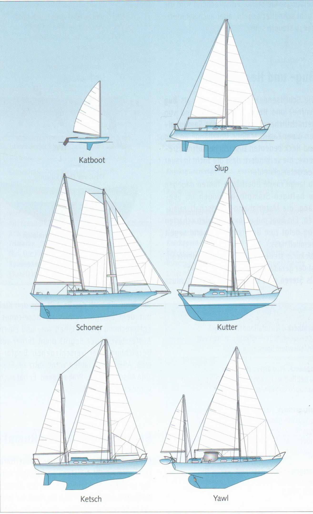
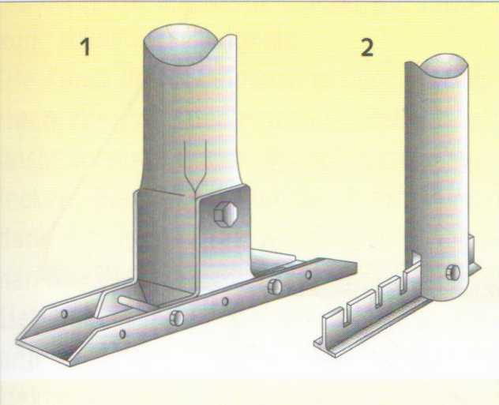
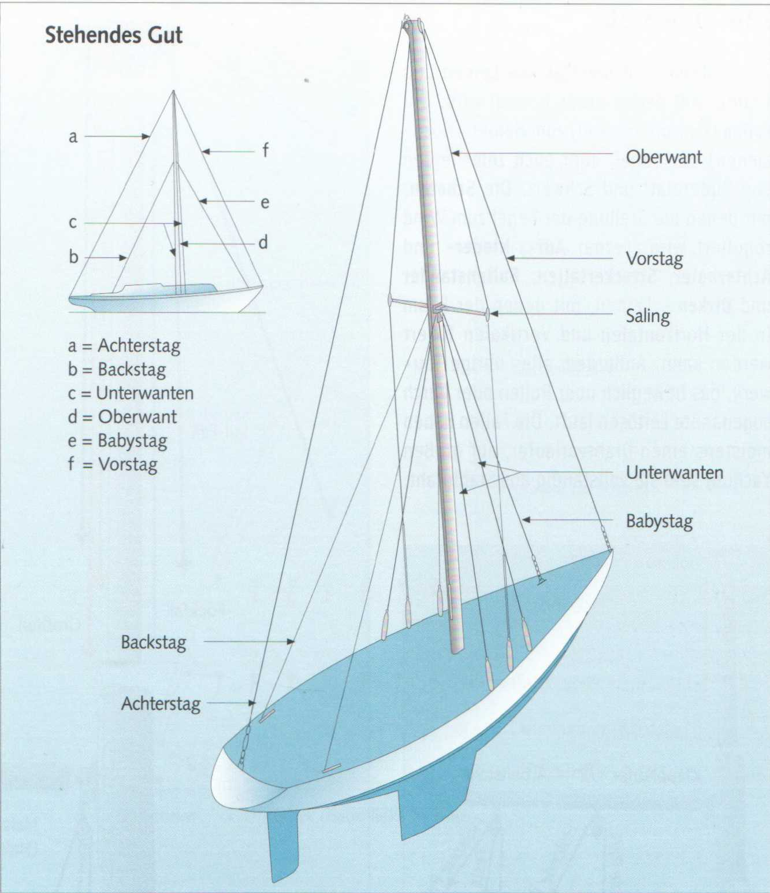
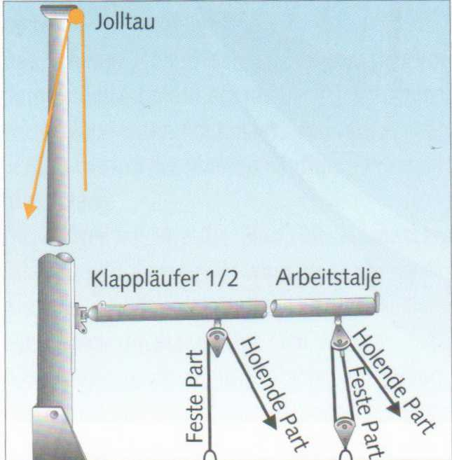
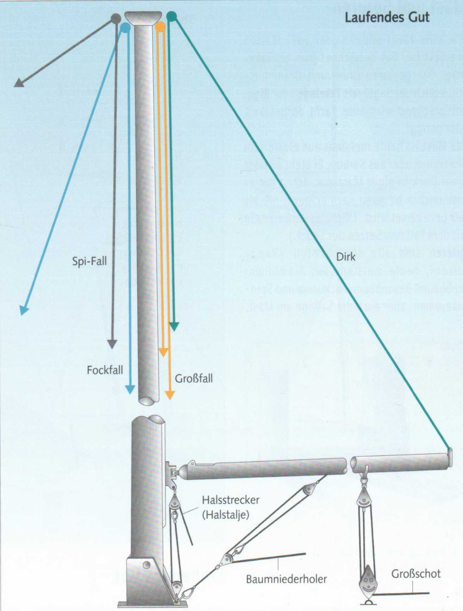

Ihre Typenbezeichnung erhält eine Yacht nach ihrer Takelungsart, der Anzahl der Segel und Masten und ihrer Aufstellung.
Das Katboot führt nur ein Großsegel an einem weit vorne stehenden Mast. Es ist am einfachsten zu bedienen. Fast alle Einmann-Jollen sind Katboote. (Nicht zu verwechseln mit dem auch Kat abgekürzten Katamaran.) Die Slup hat ein Groß- und ein Vorsegel, die Fock oder Genua. Diese Takelungsart ist am meisten verbreitet und gilt als die effizienteste.
Der Schoner ist ein echter Zweimaster. Vor dem Großmast steht ein meistens etwas kürzerer Vor- oder Fockmast. Auf modernen Schonern sind die Masten häufig aber auch gleich lang.
Der Kutter ist, wie die Slup, ein Einmaster, fährt neben dem Groß- aber zwei Vorsegel: die Fock und davor den Klüver.
Die Ketsch unterscheidet sich von der Yawl durch eine größere Segelfläche am Besan, der innerhalb der Konstruktionswasserlinie an Deck steht. Da die Segel in mehrere annähernd gleichwertige Flächen unterteilt sind, gilt die Ketschtakelung als geeignet für größere, schwach bemannte Hochseeyachten.
Auch wenn eine Ketsch (oder Yawl) zwei Vorsegel führt, wie hier, gilt sie deshalb nicht als Kutter.
Die Yawl ist ein Eineinhalbmaster mit einem Groß- und einem kleinen Besanmast, der außerhalb der Konstruktionswasserlinie steht und besonders als Steuersegel genutzt wird.

Wie eine Yacht mit ein oder zwei Masten bestückt ist, das bezeichnet man als Takelung. Das gesamte Drum und Dran, ausschließlich der Segel, als Takelage oder Rigg. Entsprechend wird eine Yacht aufgetakelt oder geriggt.
Der Mast ist heute meistens aus eloxiertem Aluminium oder aus Karbon. Er steht an oder unter Deck in einer Mastspur. Meist hat er eine leichte Neigung nach achtern, die als Fall bezeichnet wird. (Nicht zu verwechseln mit dem Fall zum Setzen der Segel.) Spieren sind alle sogenannten »Rundhölzer«, heute meistens aus Aluminium: Großbaum, Besanbaum, Fockbaum und Spinnakerbaum, aber auch die Salinge am Mast.

1 An Deck stehender Klappmast.
Der Mastfuß, von zwei Mastbacken umschlossen, ist um einen Mastbolzen in der Längsrichtung drehbar. Die Mastbacken gehören zur Mastspur, einem Schlitten, der sich zum Trimmen des Mastes in der Längsrichtung verstellen lässt.
2 Jollenmast. Als »Mastspur« dient eine Kerbschiene, auf der sich der Mast zum Trimmen mehrere Zentimeter nach vorne oder hinten versetzen lässt.
Das stehende Gut besteht meistens aus Stahldraht und hält den Mast.

Als Stage bezeichnet man die Absteifungen in der Längsschiffsrichtung: Vorstag, Baby- oder Trimmstag, Jumpstag und Achterstag, als Want die in der Querschiffsrichtung: Topp-, Ober-, Mittel- und Unterwanten. Auch das Backstag gehört zu den Wanten, das jeweils auf der Seite losgeworfen werden muss, auf der der Baum gefahren wird. Die Saling spreizt die Wanten im oberen Bereich des Mastes ab, um einen günstigeren Zugwinkel zu erreichen. Am Mast wird das stehende Gut mit Wanthängern befestigt, am Rumpf mit Püttings oder Rüsteisen: Die Spannung wird mit Wanten-, Vor- und Achterstagspannern reguliert.
Das laufende Gut umfasst alle Leinen und Drähte, mit denen etwas bewegt wird: Die Fallen (Einzahl: das Fall) zum Heißen (Hochziehen) der Segel, aber auch zum Heißen von Ruderblatt und Schwert. Die Schoten, mit denen die Stellung der Segel zum Wind reguliert wird. Ferner Auf-, Nieder- und Achterhoier, Streckertaljen, Bullenstander und Dirken - Leinen, mit denen der Baum in der Horizontalen und Vertikalen fixiert werden kann. Außerdem alles übrige Tauwerk, das beweglich über Rollen oder durch sogenannte Leitösen läuft. Die Fallen haben meistens einen Drahtvorläufer, auf großen Yachten sind sie vollständig aus Stahldraht.


Taljen - eine Kombination von Blöcken und Tauwerk - dienen der Arbeitserleichterung. Sie finden an Bord als Großschot, Halsstrecker, Baumniederholer, an Traveller, Schwert und Ruderblatt Verwendung. Das durch den Block laufende Ende bezeichnet man als Läufer, den Teil des Läufers, an dem geholt (gezogen) wird, als holende Part, das andere Ende, das an einem festen Punkt oder an der Last angreift, als feste Part.
Das Jolltau lenkt nur die Zugrichtung um, erspart aber keine Kraft.
Der Klappläufer verringert die aufzuwendende Kraft um die Hälfte, die Arbeitstalje, je nach Anbringung der festen Part, um die Hälfte oder zwei Drittel. Jeweils abzüglich eines Reibungsverlustes.